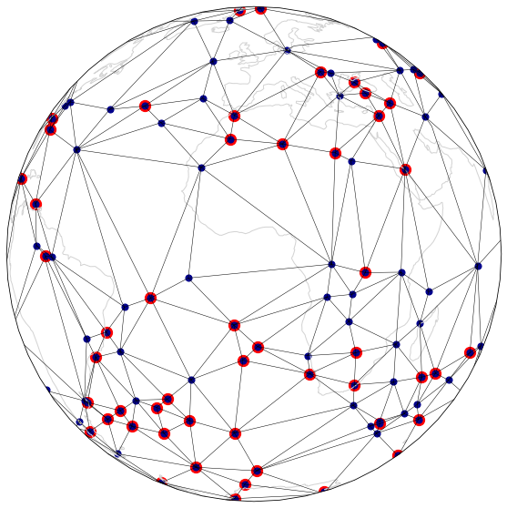
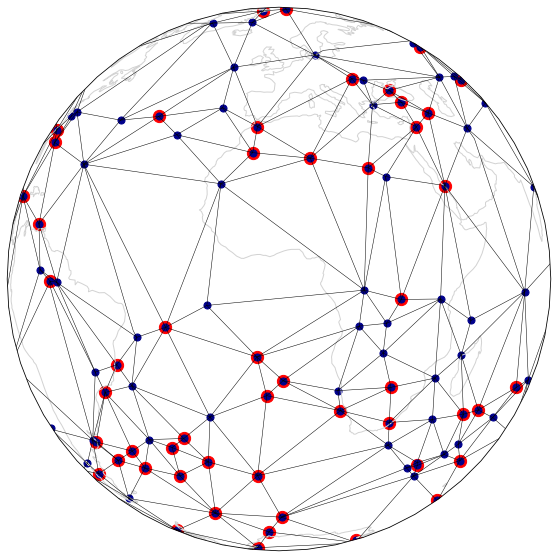

Example 2 - stripy predefined meshes¶
One common use of stripy is in meshing the sphere and, to this end, we provide pre-defined meshes for icosahedral and octahedral triangulations, each of which can have mid-face centroid points included. A triangulation of the six cube-vertices is also provided as well as a ‘buckyball’ (or ‘soccer ball’) mesh. A random mesh is included as a counterpoint to the regular meshes. Each of these meshes is also an sTriangulation.
The mesh classes in stripy are:
stripy.spherical_meshes.octahedral_mesh(include_face_points=False)
stripy.spherical_meshes.icosahedral_mesh(include_face_points=False)
stripy.spherical_meshes.triangulated_cube_mesh()
stripy.spherical_meshes.triangulated_soccerball_mesh()
stripy.spherical_meshes.uniform_ring_mesh(resolution=5)
stripy.spherical_meshes.random_mesh(number_of_points=5000)
Any of the above meshes can be uniformly refined by specifying the refinement_levels parameter.
Sample meshes¶
We create a number of meshes from the basic types available in stripy with approximately similar numbers of vertices.
import stripy as stripy
str_fmt = "{:35} {:3}\t{:6}"
## A bunch of meshes with roughly similar overall numbers of points / triangles
octo0 = stripy.spherical_meshes.octahedral_mesh(include_face_points=False, refinement_levels=0)
octo2 = stripy.spherical_meshes.octahedral_mesh(include_face_points=False, refinement_levels=2)
octoR = stripy.spherical_meshes.octahedral_mesh(include_face_points=False, refinement_levels=5)
print(str_fmt.format("Octahedral mesh", octo0.npoints, octoR.npoints))
octoF0 = stripy.spherical_meshes.octahedral_mesh(include_face_points=True, refinement_levels=0)
octoF2 = stripy.spherical_meshes.octahedral_mesh(include_face_points=True, refinement_levels=2)
octoFR = stripy.spherical_meshes.octahedral_mesh(include_face_points=True, refinement_levels=4)
print(str_fmt.format("Octahedral mesh with faces", octoF0.npoints, octoFR.npoints))
cube0 = stripy.spherical_meshes.triangulated_cube_mesh(refinement_levels=0)
cube2 = stripy.spherical_meshes.triangulated_cube_mesh(refinement_levels=2)
cubeR = stripy.spherical_meshes.triangulated_cube_mesh(refinement_levels=5)
print(str_fmt.format("Cube mesh", cube0.npoints, cubeR.npoints))
ico0 = stripy.spherical_meshes.icosahedral_mesh(refinement_levels=0)
ico2 = stripy.spherical_meshes.icosahedral_mesh(refinement_levels=2)
icoR = stripy.spherical_meshes.icosahedral_mesh(refinement_levels=4)
print(str_fmt.format("Icosahedral mesh", ico0.npoints, icoR.npoints))
icoF0 = stripy.spherical_meshes.icosahedral_mesh(refinement_levels=0, include_face_points=True)
icoF2 = stripy.spherical_meshes.icosahedral_mesh(refinement_levels=2, include_face_points=True)
icoFR = stripy.spherical_meshes.icosahedral_mesh(refinement_levels=4, include_face_points=True)
print(str_fmt.format("Icosahedral mesh with faces", icoF0.npoints, icoFR.npoints))
socc0 = stripy.spherical_meshes.triangulated_soccerball_mesh(refinement_levels=0)
socc2 = stripy.spherical_meshes.triangulated_soccerball_mesh(refinement_levels=1)
soccR = stripy.spherical_meshes.triangulated_soccerball_mesh(refinement_levels=3)
print(str_fmt.format("BuckyBall mesh", socc0.npoints, soccR.npoints))
## Need a reproducible hierarchy ...
ring0 = stripy.spherical_meshes.uniform_ring_mesh(resolution=5, refinement_levels=0)
lon, lat = ring0.uniformly_refine_triangulation()
ring1 = stripy.sTriangulation(lon, lat)
lon, lat = ring1.uniformly_refine_triangulation()
ring2 = stripy.sTriangulation(lon, lat)
lon, lat = ring2.uniformly_refine_triangulation()
ring3 = stripy.sTriangulation(lon, lat)
lon, lat = ring3.uniformly_refine_triangulation()
ringR = stripy.sTriangulation(lon, lat)
# ring2 = stripy.uniform_ring_mesh(resolution=6, refinement_levels=2)
# ringR = stripy.uniform_ring_mesh(resolution=6, refinement_levels=4)
print(str_fmt.format("Ring mesh (9)", ring0.npoints, ringR.npoints))
randR = stripy.spherical_meshes.random_mesh(number_of_points=5000)
rand0 = stripy.sTriangulation(lons=randR.lons[::50],lats=randR.lats[::50])
rand2 = stripy.sTriangulation(lons=randR.lons[::25],lats=randR.lats[::25])
print(str_fmt.format("Random mesh (6)", rand0.npoints, randR.npoints))
Octahedral mesh 6 4098
Octahedral mesh with faces 14 3074
Cube mesh 8 6146
Icosahedral mesh 12 2562
Icosahedral mesh with faces 32 7682
BuckyBall mesh 92 5762
Ring mesh (9) 30 7170
Random mesh (6) 100 5000
print("Octo: {}".format(octo0.__doc__))
print("Cube: {}".format(cube0.__doc__))
print("Ico: {}".format(ico0.__doc__))
print("Socc: {}".format(socc0.__doc__))
print("Ring: {}".format(ring0.__doc__))
print("Random: {}".format(randR.__doc__))
Octo:
An octahedral triangulated mesh based on the sTriangulation class
Cube:
An cube-based triangulated mesh based on the sTriangulation class
Ico:
An icosahedral triangulated mesh based on the sTriangulation class.
Socc:
This mesh is inspired by the C60 molecule and the soccerball - a truncated
icosahedron with mid points added to all pentagon and hexagon faces to create
a uniform triangulation.
Ring:
A mesh of made of rings to create a roughly gridded, even spacing on
the sphere. There is a small random component to prevent points lying along the
prime meridian so this mesh should be used with caution in parallel
Random:
A mesh of random points. Take care if you use this is parallel
as the location of points will not be the same on all processors
Analysis of the characteristics of the triangulations¶
We plot a histogram of the (spherical) areas of the triangles in each of the triangulations normalised by the average area. This is one measure of the uniformity of each mesh.
%matplotlib inline
import matplotlib.pyplot as plt
import numpy as np
def area_histo(mesh):
freq, area_bin = np.histogram(mesh.areas(), bins=20)
area = 0.5 * (area_bin[1:] + area_bin[:-1])
(area * freq)
norm_area = area / mesh.areas().mean()
return norm_area, 0.25 * freq*area / np.pi**2
def add_plot(axis, mesh, xlim, ylim):
u, v = area_histo(mesh)
axis.bar(u, v, width=0.025)
axis.set_xlim(xlim)
axis.set_ylim(ylim)
axis.plot([1.0,1.0], [0.0,1.5], linewidth=1.0, linestyle="-.", color="Black")
return
fig, ax = plt.subplots(4,2, sharey=True, figsize=(8,16))
xlim=(0.75,1.5)
ylim=(0.0,0.125)
# octahedron
add_plot(ax[0,0], octoR, xlim, ylim)
# octahedron + faces
add_plot(ax[0,1], octoFR, xlim, ylim)
# icosahedron
add_plot(ax[1,0], icoR, xlim, ylim)
# icosahedron + faces
add_plot(ax[1,1], icoFR, xlim, ylim)
# cube
add_plot(ax[2,0], cubeR, xlim, ylim)
# C60
add_plot(ax[2,1], soccR, xlim, ylim)
# ring
add_plot(ax[3,0], ringR, xlim, ylim)
# random (this one is very different from the others ... )
axis=ax[3,1]
u, v = area_histo(randR)
axis.bar(u, v, width=0.5)
axis.set_xlim(0.0,11.0)
axis.set_ylim(0,0.125)
axis.plot([1.0,1.0], [0.0,1.5], linewidth=1.0, linestyle="-.", color="Black")
fig.savefig("AreaDistributionsByMesh.png", dpi=250, transparent=True)
#ax.bar(norm_area, area*freq, width=0.01)

The icosahedron with faces looks like this¶
It is helpful to be able to view a mesh in 3D to verify that it is an appropriate choice. Here, for example, is the icosahedron with additional points in the centroid of the faces.
This produces triangles with a narrow area distribution. In three dimensions it is easy to see the origin of the size variations.
## The icosahedron with faces in 3D view
import k3d
plot = k3d.plot(camera_auto_fit=True, grid_visible=False,
menu_visibility=True, axes_helper=False )
smesh = icoFR # or isoF0
indices = smesh.simplices.astype(np.uint32)
points = np.column_stack(smesh.points.T).astype(np.float32)
plot += k3d.mesh(points, indices, wireframe=False, color=0x8888FF,
flat_shading=True, opacity=0.5 )
plot += k3d.mesh(points, indices, wireframe=True, color=0x3333BB,
flat_shading=True, opacity=1.0 )
## This helps to manage the wireframe / transparency
plot += k3d.mesh(points*0.98, indices, wireframe=False,
color=0xBBBBBB, opacity=1.0, flat_shading=False )
plot += k3d.points(points, point_size=0.01, color=0xFF0000)
plot.display()
%matplotlib inline
import cartopy
import cartopy.crs as ccrs
import matplotlib.pyplot as plt
global_extent = [-180.0, 180.0, -90.0, 90.0]
projection1 = ccrs.Orthographic(central_longitude=0.0, central_latitude=0.0, globe=None)
projection2 = ccrs.Mollweide(central_longitude=-120)
projection3 = ccrs.PlateCarree()
base_projection = ccrs.PlateCarree()
def mesh_fig(mesh, meshR, name):
fig = plt.figure(figsize=(10, 10), facecolor="none")
ax = plt.subplot(111, projection=ccrs.Orthographic(central_longitude=0.0, central_latitude=0.0, globe=None))
ax.coastlines(color="lightgrey")
ax.set_global()
generator = mesh
refined = meshR
lons0 = np.degrees(generator.lons)
lats0 = np.degrees(generator.lats)
lonsR = np.degrees(refined.lons)
latsR = np.degrees(refined.lats)
lst = refined.lst
lptr = refined.lptr
ax.scatter(lons0, lats0, color="Red",
marker="o", s=150.0, transform=ccrs.PlateCarree())
ax.scatter(lonsR, latsR, color="DarkBlue",
marker="o", s=50.0, transform=ccrs.PlateCarree())
segs = refined.identify_segments()
for s1, s2 in segs:
ax.plot( [lonsR[s1], lonsR[s2]],
[latsR[s1], latsR[s2]],
linewidth=0.5, color="black", transform=ccrs.Geodetic())
fig.savefig(name, dpi=250, transparent=True)
return
mesh_fig(octo0, octo2, "Octagon" )
mesh_fig(octoF0, octoF2, "OctagonF" )
mesh_fig(ico0, ico2, "Icosahedron" )
mesh_fig(icoF0, icoF2, "IcosahedronF" )
mesh_fig(cube0, cube2, "Cube")
mesh_fig(socc0, socc2, "SoccerBall")
mesh_fig(ring0, ring2, "Ring")
mesh_fig(rand0, rand2, "Random")


 

The next example is Ex3-Interpolation